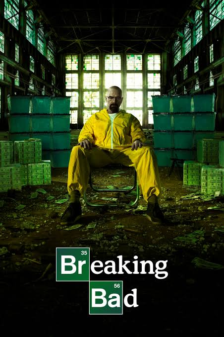

Breaking Bad

Walter White (Bryan Cranston) é um professor de química na casa dos 50 anos que trabalha em uma escola secundária no Novo México. Para atender às necessidades de Skyler (Anna Gunn), sua esposa grávida, e Walt Junior (RJ Mitte), seu filho deficiente físico, ele tem que trabalhar duplamente. Sua vida fica ainda mais complicada quando descobre que está sofrendo de um câncer de pulmão incurável.
Para aumentar rapidamente a quantidade de dinheiro que deixaria para sua família após sua morte, Walter usa seu conhecimento de química para fazer e vender metanfetamina, uma droga sintética. Ele conta com a ajuda do ex-aluno e pequeno traficante Jesse (Aaron Paul) e enfrenta vários desafios, incluindo o fato de seu concunhado ser um importante nome dentro da Agência Anti-Drogas da região.
Informações principais
- Gênero: Drama, Suspense
- Ano de lançamento: 2008
- Temporadas: 5
- Episódios: 62
- Criador: Vince Gilligan
Curiosidades
- A famosa droga azul era feita de doces (como rock candies) com sabor de algodão doce. Na vida real, traficantes reais chegaram a tingir a droga de azul por causa da série.
- As roupas dos personagens mudam de tom conforme o humor e a evolução moral, com Walter White usando cores mais escuras com o passar do tempo
- RJ Mitte, que interpreta Walter Jr., tem paralisia cerebral na vida real, embora de forma mais branda que seu personagem